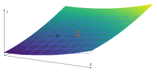

İki değişkenli bir fonksiyonda x değişirken y sabit tutulursa tek değişkenli bir kesit elde edilir. Bu kesitin türevi \(f_x\) olur. Benzer biçimde y değişirken x sabit tutularak \(f_y\) bulunur. Sabit tutmak, diğer değişkeni sıfır yapmak demek değildir; türev sırasında katsayı gibi davranmasını sağlamaktır.
\(f(x,y)=x^2y^3+3x\) için birinci kısmi türevleri bulunuz.
Adım adım çözümü göster
x yönünde y sabittir: \(f_x=2xy^3+3\). y yönünde x sabittir: \(f_y=3x^2y^2\).
Örneğin \((1,2)\) noktasında \(f_x=19\), \(f_y=12\). Bunlar yüzeyin koordinat kesitlerindeki eğimleridir.
5.2Pekiştirme
Limit tanımıyla kısmi türev
\(f(x,y)=x^2y\) için \(f_x(a,b)\) değerini tanımdan bulunuz.
Adım adım çözümü göster
\([f(a+h,b)-f(a,b)]/h=[(a+h)^2b-a^2b]/h=2ab+bh\).
h sıfıra giderken \(f_x(a,b)=2ab\) elde edilir. Bu, diğer değişkeni neden sabit tuttuğumuzu doğrudan gösterir.
5.2
Yüksek mertebeli ve karma türevler
Birinci kısmi türevler de fonksiyon olduğundan yeniden türevlenebilir. Bu notlarda \(f_{xy}=(f_x)_y\): önce x, sonra y türevi demektir. İşlem sırasını açık yazmak farklı kaynaklardaki gösterim karışıklığını önler. Karma türevler bir komşulukta sürekli ise Clairaut-Schwarz teoremi \(f_{xy}=f_{yx}\) verir.
Orijin dışında türevler süreklidir; \(f_{yx}=f_{xy}\). Orijinde başlangıç fonksiyonu tanımlı olmadığı için bu formüller orijine uygulanmaz.
5.3
Türevlenebilirlik neden daha güçlüdür?
Kısmi türevler iki özel yönü ölçer. Türevlenebilirlik ise noktanın çevresindeki tüm küçük değişimlerin aynı lineer fonksiyonla açıklanabilmesini ister. Hata, yer değiştirmenin uzunluğuna göre ihmal edilebilir olmalıdır. Bu koşul teğet düzlemin yüzeyi yerel olarak temsil etmesini sağlar.
\(f_x,f_y\) bir komşulukta var ve noktada sürekli ise f o noktada türevlenebilirdir. Türevlenebilirlik sürekliliği ve kısmi türevlerin varlığını gerektirir. Ters yöndeki çıkarımlar tek başlarına doğru değildir.
5.4Pekiştirme
Kısmi türevler var, süreklilik yok
\(f(x,y)=xy/(x^2+y^2)\) orijin dışında, \(f(0,0)=0\) olsun. Orijinde kısmi türevleri ve türevlenebilirliği inceleyiniz.
Adım adım çözümü göster
Eksenler boyunca fonksiyon sıfırdır. Bu yüzden \(f_x(0,0)=f_y(0,0)=0\).
\(y=x\) boyunca değer \(1/2\), dolayısıyla fonksiyon orijinde sürekli değildir. Sürekli olmayan fonksiyon türevlenebilir olamaz.
5.4
Teğet düzlem ve normal doğru
\(z=f(x,y)\) grafiğinde \(P=(a,b,f(a,b))\) noktasındaki iki teğet yön \((1,0,f_x)\) ve \((0,1,f_y)\) olur. Çarpımları \((-f_x,-f_y,1)\) normalini verir. Yeterli türevlenebilirlik koşulları altında bu normal teğet düzlemi belirler.
\(f(x,y)=x^2+y^2\) için \((1,2,5)\) noktasındaki teğet düzlemi ve normal doğruyu bulunuz.
Adım adım çözümü göster
\(f_x=2x,f_y=2y\). Noktadaki eğimler 2 ve 4. Düzlem \(z-5=2(x-1)+4(y-2)\), yani \(z=2x+4y-5\).
Normal doğru \((x,y,z)=(1,2,5)+t(-2,-4,1)\). Normalin işaretini ters almak aynı doğruyu verir.

Yüzey ile teğet düzlem, temas noktası yakınında aynı birinci mertebe değişimi verir.
5.5
Lineerleştirme ve yaklaşık değer
Lineerleştirme \(L(x,y)\), teğet düzlemin z değeri olarak okunan afin fonksiyondur. Hesabı kolay bir merkez seçilir; merkezdeki fonksiyon değeri ve türevler bulunur; hedef noktanın küçük farkları formüle konur. Yaklaşımın güvenilirliği, merkeze uzaklık ve ikinci türevlerin büyüklüğüne bağlıdır.
\(f(x,y)=e^{2y-x}\) için \(P=(0,0)\) ve \(Q=(1,2)\) merkezlerindeki lineerleştirmeleri bulunuz.
Adım adım çözümü göster
\(f_x=-e^{2y-x}\), \(f_y=2e^{2y-x}\). P merkezinde \(L_P=1-x+2y\).
Q merkezinde \(f=e^3,f_x=-e^3,f_y=2e^3\). Bu yüzden \(L_Q=e^3-e^3(x-1)+2e^3(y-2)=e^3(2y-x-2)\).
Her model kendi merkezinin yakınında kullanılır. Örneğin \(f(0.01,0.02)=e^{0.03}\approx1.03\); bu hedef P merkezine yakındır.
5.7Pekiştirme
Karekökün yaklaşık değeri
\(\sqrt{(3.01)^2+(3.98)^2}\) ifadesini diferansiyel veya lineer modelle yaklaşık hesaplayınız.
Adım adım çözümü göster
\(f(x,y)=\sqrt{x^2+y^2}\), merkez \((3,4)\), \(f=5\). \(f_x=3/5,f_y=4/5\).
\(h=0.01,k=-0.02\). Yaklaşık değer \(5+(3/5)(0.01)+(4/5)(-0.02)=4.99\).
5.6
Lineer yaklaşımın hata sınırı
İkinci türevler merkezi hedefe bağlayan parçayı içeren bir bölgede sürekli ve \(|f_{xx}|\le M\), \(|f_{xy}|\le M\), \(|f_{yy}|\le M\) olsun. Tek değişkenli Taylor teoremi \(g(t)=f(a+th,b+tk)\) fonksiyonuna uygulanırsa aşağıdaki güvenli üst sınır elde edilir. M yalnızca merkezdeki değer değildir; bütün ilgili bölgede geçerli olmalıdır.
\(f(x,y)=1+x+\cos y\), merkez \((0,0)\), \(|x|,|y|\le0.2\). L ve hata sınırını bulunuz.
Adım adım çözümü göster
\(f(0,0)=2,f_x=1,f_y(0,0)=0\). Böylece \(L=2+x\).
\(f_{xx}=f_{xy}=0,|f_{yy}|=|\cos y|\le1\). Genel sınır 0.08 verir; yalnız y yönündeki gerçek ikinci terim kullanılırsa \(|f-L|=|\cos y-1|\le y^2/2\le0.02\).
5.7
Tam diferansiyel ve gerçek artış
Gerçek artış \(\Delta f=f(a+\Delta x,b+\Delta y)-f(a,b)\) tam farktır. Diferansiyel \(df=f_x\,dx+f_y\,dy\) bu farkın lineer kısmıdır. Yaklaşık hesapta \(dx=\Delta x,dy=\Delta y\) alınır; buna rağmen \(df\) ve \(\Delta f\) genel olarak eşit değildir. Üç değişkende \(dw=f_xdx+f_ydy+f_zdz\).
Başlangıç hacmi \(3000\pi\), yeni hacim yaklaşık \(2970\pi\). İşaret hacmin azaldığını gösterir.
5.8
İkinci tam diferansiyel ve Hessian
Bağımsız \(dx,dy\) artışları sabit kabul edilerek bir kez daha diferansiyel alınır. Karma terim iki kez geldiği için katsayı 2 olur. \(d^2f\), karesi alınmış \(df\) değildir. İkinci mertebe Taylor yaklaşımında bu terimin yarısı kullanılır.